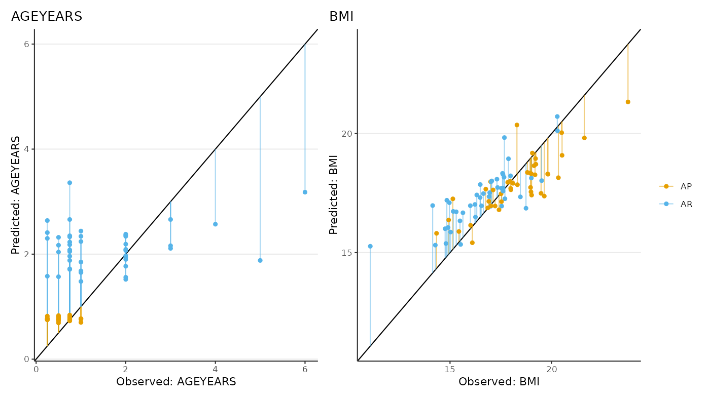

Compute adiposity peak (AP) and adiposity rebound (AR).
Usage
compute_apar(
fit,
from = c("predicted", "observed"),
start = 0.25,
end = 10,
step = 0.01,
filter = NULL
)Arguments
- fit
A model object from a statistical model such as from a call
nlme::lme(),time_model()oregg_model().- from
A string indicating the type of data to be used for the AP and AR computation, either "predicted" or "observed". Default is "predicted".
- start
The start of the time window to compute AP and AR.
- end
The end of the time window to compute AP and AR.
- step
The step to increment the sequence.
- filter
A string following
data.tablesyntax for filtering on"i"(i.e., row elements), e.g.,filter = "source == 'A'". Argument pass throughcompute_apar()(seepredict_bmi()). Default isNULL.
Examples
library(eggla)
data("bmigrowth")
res <- egg_model(
formula = log(bmi) ~ age,
data = bmigrowth[bmigrowth[["sex"]] == 0, ],
id_var = "ID",
random_complexity = 1
)
#> Fitting model:
#> nlme::lme(
#> fixed = log(bmi) ~ gsp(age, knots = c(1, 8, 12), degree = rep(3, 4), smooth = rep(2, 3)),
#> data = data,
#> random = ~ gsp(age, knots = c(1, 8, 12), degree = rep(1, 4), smooth = rep(2, 3)) | ID,
#> na.action = stats::na.omit,
#> method = "ML",
#> control = nlme::lmeControl(opt = "optim", niterEM = 25, maxIter = 500, msMaxIter = 500)
#> )
head(compute_apar(fit = res, from = "predicted")[AP | AR])
#> egg_id egg_ageyears egg_bmi AP AR
#> <char> <num> <num> <lgcl> <lgcl>
#> 1: 001 0.77 20.36074 TRUE FALSE
#> 2: 001 2.04 19.83158 FALSE TRUE
#> 3: 004 0.79 17.37386 TRUE FALSE
#> 4: 004 1.90 17.02318 FALSE TRUE
#> 5: 005 0.79 17.66391 TRUE FALSE
#> 6: 005 1.83 17.35547 FALSE TRUE
# Comparing observed and predicted values
library(data.table)
library(ggplot2)
library(patchwork)
list_gg <- melt(
data = rbindlist(
l = lapply(
X = (function(.x) `names<-`(.x, .x))(c("predicted", "observed")),
FUN = compute_apar,
fit = res
),
idcol = "from"
)[
AP | AR
][
j = what := fifelse(paste(AP, AR) %in% paste(FALSE, TRUE), "AR", "AP")
],
id.vars = c("from", "egg_id", "what"),
measure.vars = c("egg_ageyears", "egg_bmi")
)[
j = list(gg = list({
dt <- dcast(data = .SD, formula = egg_id + what ~ from)
range_xy <- range(dt[, c("observed", "predicted")], na.rm = TRUE)
ggplot(data = dt) +
aes(x = observed, y = predicted, colour = what) +
geom_abline(intercept = 0, slope = 1) +
geom_segment(aes(xend = observed, yend = observed), alpha = 0.5) +
geom_point() +
scale_colour_manual(values = c("#E69F00FF", "#56B4E9FF")) +
labs(
x = sprintf("Observed: %s", sub(".*_", "", toupper(variable))),
y = sprintf("Predicted: %s", sub(".*_", "", toupper(variable))),
colour = NULL,
title = sub(".*_", "", toupper(variable))
) +
coord_cartesian(xlim = range_xy, ylim = range_xy)
})),
by = "variable"
]
wrap_plots(list_gg[["gg"]], guides = "collect")
#> Warning: Removed 7 rows containing missing values or values outside the scale range
#> (`geom_segment()`).
#> Warning: Removed 7 rows containing missing values or values outside the scale range
#> (`geom_point()`).
#> Warning: Removed 7 rows containing missing values or values outside the scale range
#> (`geom_segment()`).
#> Warning: Removed 7 rows containing missing values or values outside the scale range
#> (`geom_point()`).
